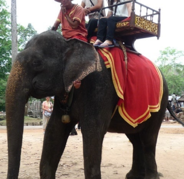

Entertainment
娯楽
カンボジアの娯楽
人口の約6割が25歳以下であるカンボジアは、若者が中心となって娯楽や文化を作っています。
<人気の娯楽>
映画
一番若者たちに人気のあるスポットは「映画館」
５$程で最新の映画も見ることが出来るため、仕事終わりやデートスポット等に行く人も多いです。

象乗り
カンボジアの人々の生活に昔から欠かせない動物として大切にされてきた象。
アンコール・ワットが世界遺産に登録され、海外旅行者が増えると共に象に乗って悠々とお散歩する象乗りもいたるところで行われるようになりました。
バレーボール
カンボジア人はバレーボールが大好き。
ただネットが張ってある野外でバレーボールを楽しんでいます。
クラブ
若者の多いカンボジアにはナイトクラブがたくさんあります。
クラブ音楽を聴いてダンスで盛り上がります。
<有名な日本人>
本田圭佑
_(cropped) 1.png)
元サッカー日本代表である本田圭佑が2018年8月にカンボジアサッカー代表のGM(ジェネラルマネージャー)に就任しました。